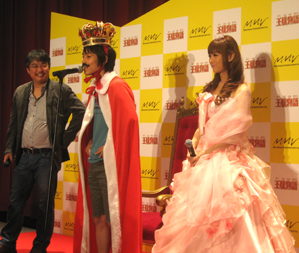
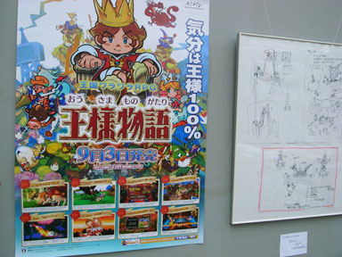

みなさん、おひさしぶりです。きむＰです。
王様物語は楽しんでいただいているでしょうか！？
冬の寒い中、Ｗｉｉでちょこちょこと
王様物語を遊んでくれているといいなぁ。
最近、僕のＷｉｉが僕の不注意で壊れちゃったので、黒いＷｉｉを買って
正月は王様物語を遊びなおそうかなーと思っています。
１年ぶりに遊んでも、ボス倒せるんだろうか・・（笑）
＊＊＊
さてさて、本題です。
実は最近、１２月５日（土）福岡にてヒューマンアカデミー主催の
ゲームクリエイターセミナーというのをやってきました。
東京からの出席者は、私と倉島さん、ミナバ君。
ゲームデザイナーをめざす初々しい若者達の質問に
我々も、初心に帰って色々答えてきました。ドキドキした～。
「ゲーム開発で苦労したことはなんですか？」
「なんでＷｉｉなんですか？」
「影響をうけた作品はなんですか？」
「洋ゲーについてどうおもいますか？」
「デザインするときに何を考えてますか？」
・・などなどの質問がでるわでるわ。
開発時期の思い出が走馬灯のように
僕らの脳裏に浮かぶ浮かぶ。
僕は１年前、福岡にたしかに暮らしていて、クリスマスもなく
マスターアップめざして、みんなでこもって仕事してました。
あの時間は必死でつらい時期でもあったけど、
同時にクオリティーもがんがんアップして
汗だくの七色の宝石みたいな時間だった。
そんな時間を思い出させてくれるとても有意義なセミナーでした。

しかも、セミナー終了後にも嬉しいハプニングが・・・！
気がつくと、講義の後の打ち上げの会には、
ヒューマンさんのご好意で福岡の開発スタッフが勢ぞろい、
なにやら都合がつかずに集まれなかった人もいたんですが・・・
ほとんど全員開発時のメンバーが集まってのカラオケ大会。
開発してる最中も、これほど爆発的に飲んだことはなかったです。
じゃんっ！！
これが王様物語スタッフによるカラオケ大会の集合写真です。

みんなっ！福岡のみんな！
王様物語完成して本当によかったな！
んでもって、今回これなかった人達へ！
絶対、みんなでそろって飲もうね！
なんだか、福岡が僕の第二の故郷みたいになっちゃいました。
福岡のご飯や空気をひさしぶりに味わえて、本当によかった。
ヒューマンアカデミーの皆さん、このような機会を用意してくれて
本当にありがとうございました。
そして、福岡開発のみなさん、元気でね！また会おう！
※追伸
この真ん中におられる美人の女性は「荒木ビビさん」といって、
なんでも倉島君や私がやっていたラブデリック時代のＭＯＯＮから
ファンでいてくれたとか・・。
こんな出会いもあるんですね～。か、かわいすぎて、目の行き場が・・。
きむPです。
ついについに、伊集院さんの王様ＴＶ、最終回の配信が
公式ＨＰにて、本日行われました。
本当に心から、ありがとうございましたとお礼をいいたいです。
伊集院さんがこういう類の映像に出演しないというのは知ってましたが
もしかして・・と思って、手紙を書かさせていただきました。
実は、何度も書き直しました。
そして、最後に書いた紙も封を閉じた後に突然恥ずかしくなって・・、
やっぱり出すのやめとけばよかったかも・・なんて考えたりもしました。
まるで、中学生のときに書いた真夜中のラブレターのような気分です。
だけど、手紙をだして本当によかったです。
こうやって協力いただいて、本当にうれしかったです。
撮影の合間のゲーム談義、とても楽しかった。
宮本茂さんへのリスペクト。いいですね。
僕も同じ気持ちです。
王様物語は宮本茂さんのゲームには、まだまだかないませんが
そこに一歩でも二歩でも近づけたいという気持ちと
自分の中にある、ヘンテコワールドを合体させた作品です。
実は今年僕がゲームを作り始めて１５年目になります。
この節目で伊集院さんに自分のゲームをプレイしてもらえて
本当に光栄でした。
撮影中は緊張して、お礼もちゃんと言えてなかったような気がします。
なので、今、この第五回放送の今日
あらためて、お礼をいいなおしたいのです。
ブログにて失礼します。本当にありがとうございました。
そして、伊集院さん出演までに協力してくれたスタッフの皆様
本当にありがとうございました。
王様物語に乾杯！伊集院光に乾杯！
ディレクター＆プロデューサー
木村祥朗
みなさん、おひさしぶりです。きむPです。
ついに、王様物語の発売日を迎えました。
今日は発売日イベントの「王様即位式」なんかもあったりして
なんだか、感極まっております。
椿姫さん、すんごく、かわいかったです。
一般公募で選ばれた王様君もいい感じでした。
彼がウクレレで歌った「姫の歌」も心温まる良い歌声でした。

※これが選ばれた王様です！そして、イベントに来てくれた皆様
本当にありがとうございました！
いやぁ、とにもかくにも、ついについに発売日がきました。
きちゃいました。
この日がくるまで、どれだけの山やら谷やらがあったことでしょうか。
しかし、そんな苦労話、よもやま話も終わりの終わり。
ここから先は泣いても笑っても、
お客さんが遊んで感じたことだけが真実。
雑誌の評価なんか関係ない。
海外のWEBで高得点だからって関係ない。
これから、日本でこのソフトを遊んでくれる
一人一人の王様物語が生まれます。
おもろいと思う人も
つまらないと思う人も
いるでしょう。
王様物語はお客様のもんです。
どんな風に僕らが作った
王様物語を遊んでくれるのか
ドキドキ、ハラハラ、そしてワクワクしています。
私は結婚もしてませんし、子供もおらんのですが
これがもしかすると、"わが子を送り出す親の気持ち"
・・というやつに近いのかもしれません。
皆様、なにとぞ我が子、「王様物語」をよろしくお願いします！！
プロデューサー＆ディレクター 木村祥朗
おはようございます、倉島です。
現在スイスの田舎の村からお手紙したためております。
あいかわらず海外在住で申し訳ありません。
そして… 長らくお待たせいたしました！
「王様物語」いよいよ明日発売でえーす。
なにかしらのアクシデントで既に
ゲッティングなさったラッキーな貴方様
王様ライフエンジョイしてますか？
ああ、わたしもココにWiiがあったなら
思う存分にワラワラしたいもんだけど、
残念ながらＴＶすらありません。
あほんだらな私の分まで遊びつくしてくださいな。
明日の発売にあたって準備は万端ですか？
以下、チェックリストとして誤使用 …もとい、御使用ください。
・購入資金の預貯金は下ろされましたか？
・Wiiセーブ用の空きブロックは確保できていますか？
・Wiiリモコン用の単三電池はお持ちですか？
・購入予定店までの地図は把握できていますか？
（Googlemapなど併用して迷わず迅速にお買い求めください）
・いま何問目ですか？
・王様気分を更に盛り上げるビロードのガウンなどお持ちですか？
・時々無性に孤独感を感じることがありますか？
・王国を築くにあたってマニフェスト的なものはお考えですか？
・そして、わたしはマニフェストの意味を理解していますか？
・わたしの文章は鬱陶しく感じますか？
・山は死にますか？
どうですか？
準備完了ですか？
さあ、もう心配いりません。
明日の建国に備えて思いっきし眠ってください。
そして私はスイッツァランドの熱帯植物園で開催中のグループ展にて
地道に欧州版「王様物語」布教活動を続けたいと思います。

あ でも
そろそろ帰国します。
では、楽しんでくださいね～
しーゆー
みなさまにこの場をかりまして、残暑お見舞い申し上げます。
キャラクターデザインの皆葉です。
これを執筆している８月３１日現在、関東地方には台風が近づいています。
こういった嵐の日は気持ちが昂ぶるものですが、理由はそれだけではありません。
そう！
「王様物語」の発売も近づいているのです！！
長かった…。本当にこんな日が来るなんて、夢みたいです。
しかし、この感動の勢いでも、あまり長い文章だと
読んでもらえない可能性が高いので、短めに地味にPR。
ある日、王冠を手に入れたときから、あなたは突然「王様」になる！
そんなオカシナ導入の物語に引き込まれ、気がつけば王国設営！
人々の願いを叶えながら、
王国を大きくしていくと立ちはだかる敵（ヘンナノ）たち！
大きくなった王国に住み着き始めた人々を引き連れての冒険！
そして簡単＆奥深いワラワラ・アクションバトル！
個性的な人々や、個性的な世界に飲み込まれ、どっぷりと王国ライフ！
これを買って、ホンモノの王様になれ！！
デザイネイション 皆葉英夫


 クリエイターズBLOG トップ
クリエイターズBLOG トップ